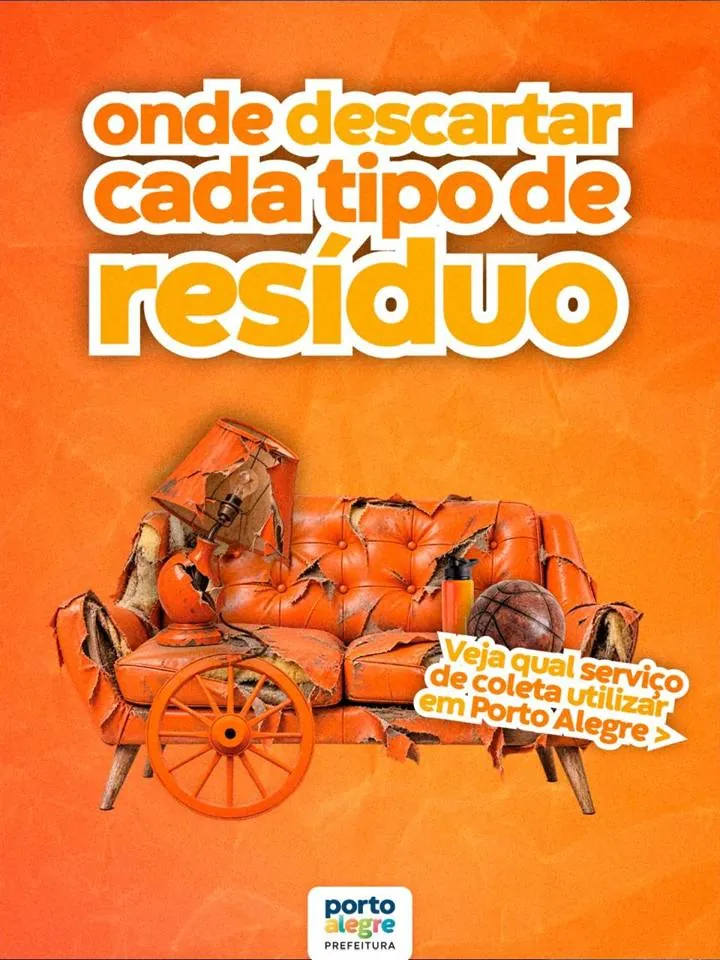
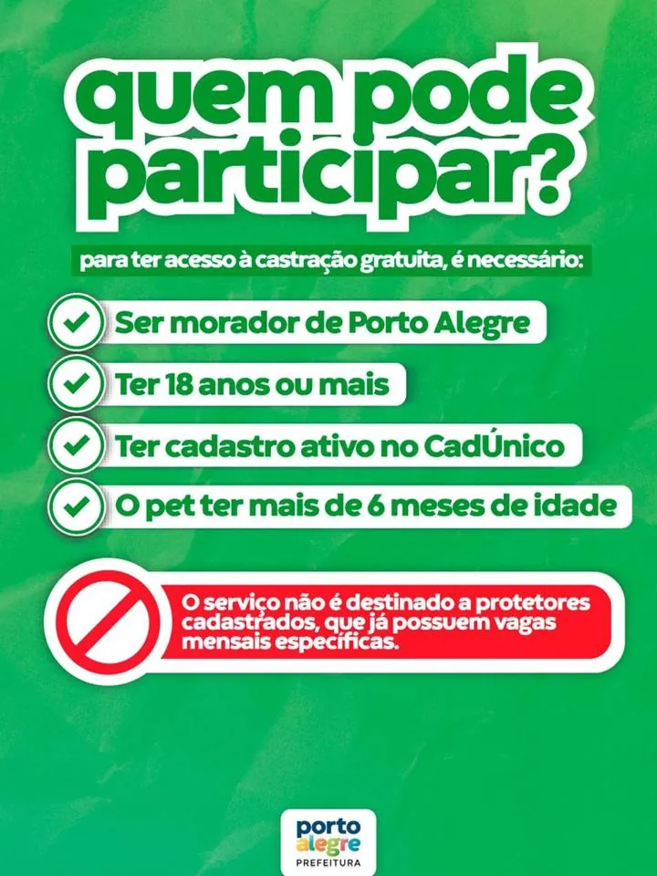
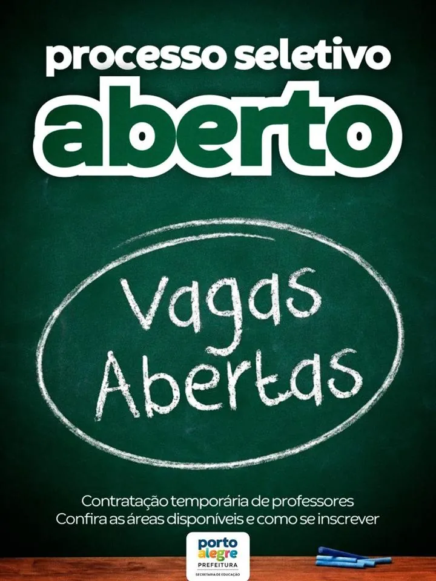
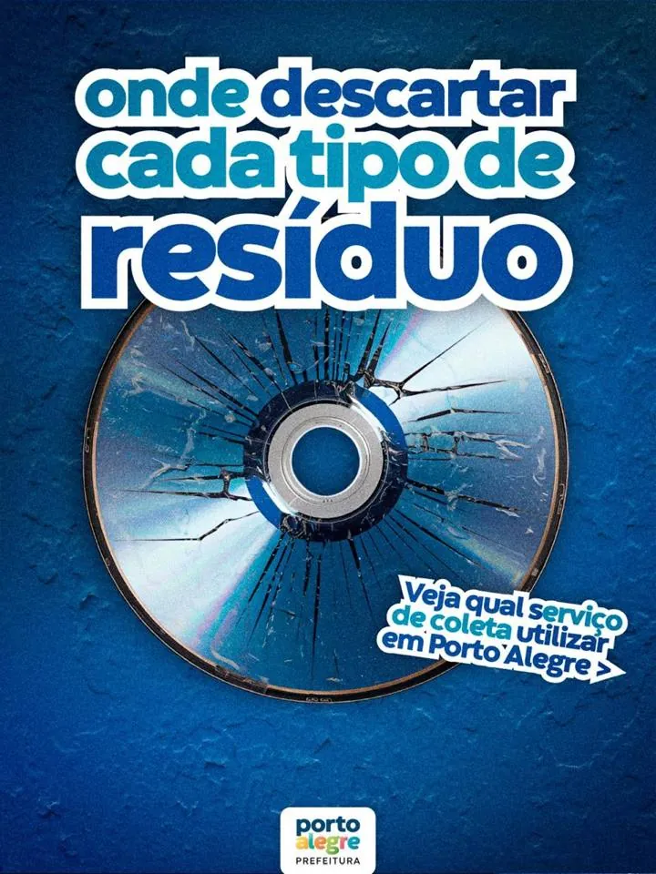
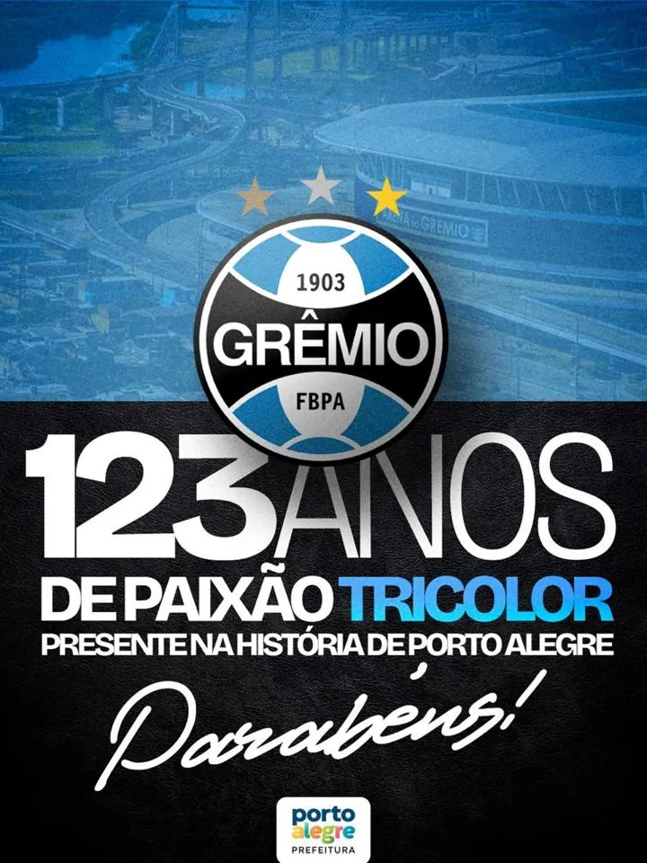
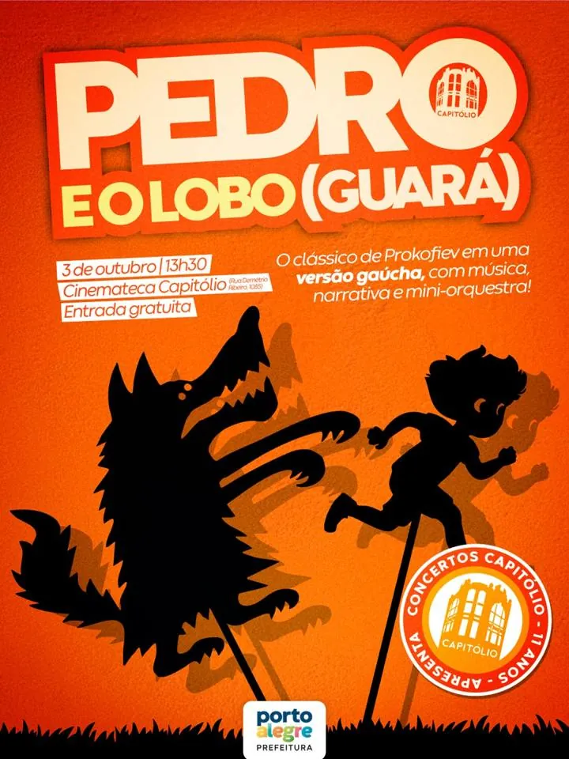
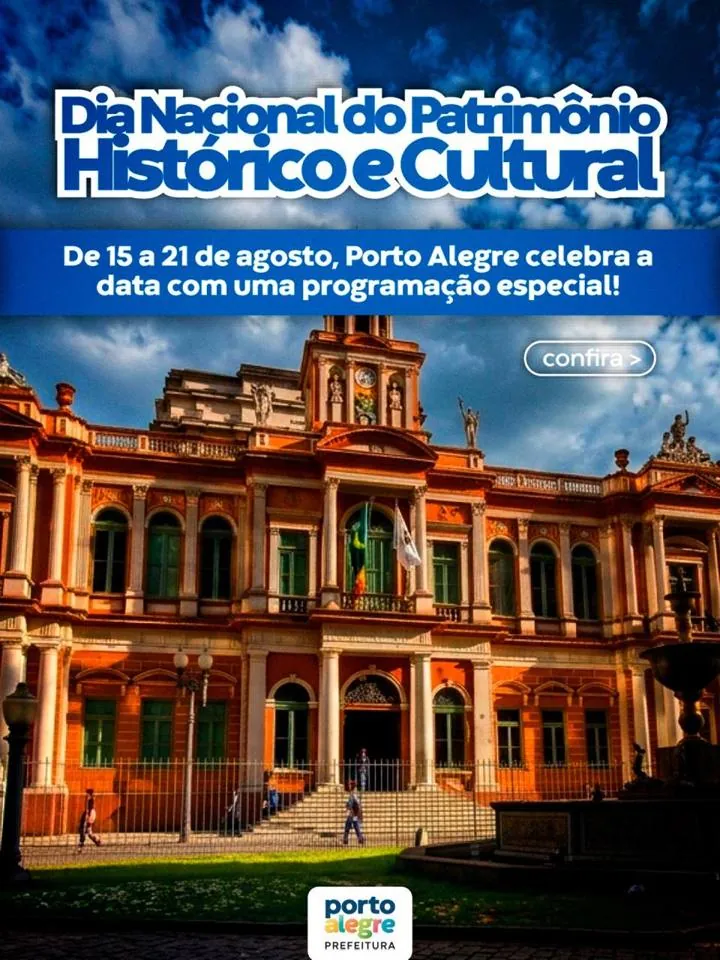
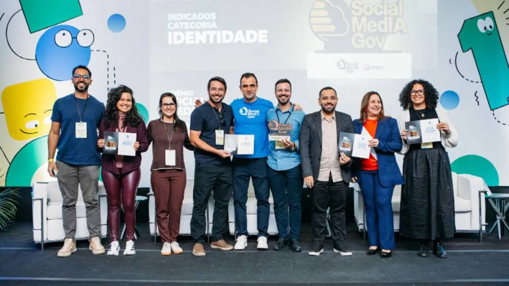

Antônio Meneghetti · Diretor de artePrefeitura de Porto Alegre · 1/7
Case
Prefeitura de
Porto Alegre.
Direção de arte da comunicação oficial da cidade, 2026.

Direção de arte da comunicação oficial da cidade, 2026.
Serviços do 156, educação, limpeza urbana, praças, acesso à informação e as datas da cidade. Assuntos diferentes, para públicos diferentes, que precisam parecer uma única Prefeitura.


Um serviço público explicado em carrossel de 8 artes: um rosto que para a rolagem e o passo a passo sem juridiquês.

Títulos grandes, uma mensagem por peça e a marca da Prefeitura sempre no mesmo lugar.


Aniversário do Grêmio, concertos no Capitólio e o Dia do Patrimônio: cada data com personalidade própria, sem sair da linguagem.



O trabalho de comunicação visual da Prefeitura foi premiado no Social Media Gov, na categoria Identidade.

Antônio Meneghetti, designer e diretor de arte em Porto Alegre.
Portfólio completo e contato no meu perfil.